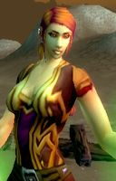

Les Terres de Kirin Tor
Siowallinn
Points : 0

Joué par :
[ Information masquée ]
Age : 25
Lieu de naisance : Northshire
Signe de naissance : Panda
Sexe : Femme
Race : Humain
Faction : Alliance
Formation : Prêtre
Niveau : 51
Guilde : Alfirins (les)
Artisanat 1 : Alchimiste
Artisanat 2 : Herboriste
Envoyer un MP
Description : Siowallinn, prêtresse de la Lumière.
Siowallinn est née dans la région de Stormwind, ses parents sont issues d'un milieu simple, sans histoire. Elle a passé son enfance à l'abbaye de Northshire. Une éducation stricte, une vie consacrée à la Lumière, l'austérité de la vie d'une pretresse l'attendait. Depuis toute jeune, elle s'interesse aux soins et à la connaissance des herbes et pour cela, elle est amené à sortir de l'abbaye de Northshire, à découvrir le monde d'Azeroth et à s'émanciper.
Dès le premier contact avec le monde extérieur, elle a été bouleversé, sa prude éducation vole en éclat, Siowallinn veut devenir aventurière...
Elle rencontre Thoarr qui l'introduit dans la guilde, Herlotte et Biba, avec qui elle vit ses premières grandes aventures.
Depuis, d'aventures en aventures, un doute s'installe dans l'esprit de Siowallinn, elle ressent cette présence très puissante qu'est l'Ombre.
Un combat intérieur entre l'Ombre et la Lumière va alors la tourmenter.